以下是可以在118.178.111.167 23333端口使用的先行卡的列表。下载补丁后即可使用。
使用方法：原版游戏下载补丁后解压至游戏文件夹，YGOMobile请自定义数据库（方法请查看压缩包内使用说明），暂不保证对其他版本的支持。
资料来源：任天堂世界论坛。
脚本作者：ygopro-pre-script，YGOPRO。目前所有脚本来自于以上这2个项目，在此对各自的贡献者表示感谢。
版权声明：转载请注明出自本页面，并完整保留附带的使用说明文档。如果您想对本项目进行修改，请移步这里，但我们建议您直接参与官方项目ygopro-pre-script。
星星和加号图标是Yusuke Kamiyamane的作品。
更新记录
- 2016-11-24 23:44
- 新卡：妖仙兽的神颪、花札卫-月花见-、时空之灵摆读阵。
- 修复：迪亚邦德之核无法使用的问题。
- 修复：暗黑之召唤神在场上没有格子的场合不能把自己解放发动效果的问题。
- 修复：真龙皇 法·王·兽会使宣言属性的怪兽的灵摆效果也不能发动的问题。
- 2016-11-24 00:25
- 修复：元素英雄 真诚新宇侠②效果应能丢弃所有「英雄」怪兽。
- 2016-11-24 00:02
- 修复：真龙皇 法·王·兽的效果应对发动后上场的怪兽也有效。
- 2016-11-23 23:38
- 修复：白翼之魔术师提示问号的问题。
- 修复：星霜之灵摆读阵在怪兽回到非公开区域的场合不能发动效果的问题。
- 修复：捕食植物 冬虫夏草发动效果后不能把融合怪兽以融合召唤以外的方式特殊召唤的问题。
- 修复：真龙机兵 十二炼机圣可以把陷阱怪兽当作二次解放的问题。
- 2016-11-23 00:42
- 修复：真龙战士 点火烈·炽热和真龙拳士 雾动轰·铁拳加入手卡的提示显示为问号的问题。
- 修复：英雄的遗产无法使用的问题。
- 2016-11-21 22:39
- 新卡：英雄的遗产、幻影英雄 仿生人、迪亚邦德之核、暗黑之召唤神、失乐园。
- 更新：优化部分卡图。
- 修复：星刻之魔术师代替破坏次数无限的问题。
- 修复：幻影骑士团 雾鸦爪不被视为战士族怪兽的问题。
- 修复：星霜之灵摆读阵在对方的卡离场时也能发动的问题。
- 2016-11-20 22:36
- 新卡：星刻之魔术师。
- 修复：死灵式同调特殊召唤的怪兽工作不正常的问题。
- 修复：刻读之魔术士不能把手卡怪兽特殊召唤的问题。
- 修复：抒情歌鸲-绿松石莺从任意地方特殊召唤都能发动效果的问题。
- 修复：真龙机兵 十二炼机圣部分场合不能解放魔法·陷阱卡特殊召唤的问题。
- 修复：超越融合不能把凶饿毒融合龙的融合素材特殊召唤的问题。
- 修复：真龙皇的复活发动时不能同时使用②效果的问题，和部分情况下同一连锁内可以使用①②效果的问题。
- 2016-11-20 13:33
- 修复：真龙机兵 十二炼机圣上级召唤后苏生的场合仍然有抗性的问题。
- 修复：部分真龙怪兽在对方场上有永续魔法·陷阱的场合就可以召唤的问题。
- 2016-11-20 11:30
- 修复：部分「真龙」卡提示显示为问号的问题。
- 修复：抒情歌鸲-吟诵椋鸟会使自己受到这张卡给对方造成的战斗伤害的问题。
- 修复：超重武者 大八-8检索效果不能使用的问题。
- 修复：捕食生成不能放置指示物的问题。
- 修复：牛头鬼不能把不死族怪兽特殊召唤的问题。
- 修复：宙读之魔术士在结束阶段有效果需要处理的问题。
- 修复：黑牙之魔术师灵摆效果能多次发动的问题。
- 修复：星霜之灵摆读阵应为必发效果。
- 修复：真龙机兵 十二炼机圣应不能覆盖召唤。
- 修复：真龙皇的复活①②效果不能在同一回合发动的问题。
- 2016-11-20 00:00
- 修复：真龙的继承①效果无法使用的问题。
- 2016-11-19 23:29
- 修复：部分卡未被识别为「真龙」卡的问题。
- 2016-11-19 23:12
- 新卡：VJMP公布新卡共39张。部分卡片因效果不全暂时无法使用。
- 更新：删除已经正式更新的卡。
- 2016-11-17 22:19
- 新卡：电子光虫-LED瓢虫、破坏剑士的摇篮、神数的神意。
- 更新：优化部分卡图。
- 2016-11-13 17:36
- 新卡：魔玩具补缀。
- 2016-11-12 16:04
- 修复：捕食植物 瓶子草蚁被战斗破坏的场合应也能发动②效果。
- 修复：捕食植物 茅膏菜伞蜥效果处理时里侧表示的场合应也能进行融合。
- 修复：强欲毒融合龙应能以攻击力为0的怪兽为对象发动效果，和没有把场上的怪兽破坏也能把自己特殊召唤的问题。
- 修复：捕食惑星①效果在卡组没有捕食卡的场合不会强制诱发的问题。
- 修复：魔玩具·钩乌贼变成守备表示的效果应只发动1次。
- 修复：召唤兽 埃律西昂效果处理时对象怪兽变成里侧表示的场合应不会除外相同属性的怪兽，但会除外对象怪兽。
- 修复：召唤兽 埃律西昂应不能把墓地的怪兽视为额外卡组特殊召唤的怪兽作为融合素材。
- 修复：法之圣典、简易融合等卡不适用暴走魔法阵效果的问题。
- 2016-11-11 23:59
- 新卡：魔界剧团-闪烁小明星。
- 更新：优化部分卡图。
- 2016-11-11 14:22
- 修复：法之圣典特殊召唤的怪兽没有解除苏生限制的问题。
- 2016-11-10 22:18
- 修复：毛绒动物·企鹅丢弃手卡前不洗手牌的问题。
- 修复：法之圣典能特殊召唤相同属性的怪兽的问题。
- 2016-11-10 18:27
- 新卡：毛绒动物·企鹅、召唤兽 普尔加托里奥、法之圣典、捕食植物 犀角龙。
- 2016-11-08 22:19
- 修复：召唤魔术效果处理时不在场上表侧表示的场合效果无效的问题。
- 2016-11-07 00:14
- 修复：疾行机人 多米诺蝴蝶应为调整。
- 2016-11-06 23:15
- 修复：急袭猛禽-武库猎鹰无法超量召唤的问题。
- 2016-11-06 21:06
- 新卡：急袭猛禽-武库猎鹰、疾行机人 多米诺蝴蝶。
- 更新：优化部分卡图。
- 修复：异形神的契约书在任意怪兽超量召唤成功时都能发动的问题。
- 修复：元素英雄 真诚新宇侠等卡有刻度数据的问题。
- 2016-10-30 21:37
- 修复：魔法名-「大兽」无法使用的问题。
- 2016-10-30 19:58
- 修复：异形神的契约书不能成为对象和除外卡片效果无效的问题。
- 2016-10-30 19:47
- 新卡：异形神的契约书、召唤兽 墨瓦腊泥加、魔法名-「大兽」。
- 修复：召唤兽 科库托斯的攻击力应为1800。
- 2016-10-29 13:30
- 修复：捕食植物 露松水螅龙不能解放对方怪兽特殊召唤的问题，和不能选自己怪兽下降攻击力的问题。
- 修复：部分捕食卡不识别910的捕食植物的问题。
- 2016-10-28 21:58
- 修复：捕食植物 瓶子草蚁检索对象错误的问题。
- 2016-10-28 21:56
- 修复：捕食惑星在任何卡从场上离开的场合都能发动的问题。
- 2016-10-28 21:18
- 修复：捕食植物 露松水螅龙无法使用的问题。
- 修复：捕食惑星无法使用的问题。
- 2016-10-28 20:57
- 新卡：捕食植物新卡5张、暴走魔法阵。
- 修复：强欲毒融合龙2效果处理时自己被除外也能特殊召唤的问题。
- 2016-10-22 18:50
- 修复：元素英雄 真诚新宇侠②效果无效的问题。
- 修复：召唤师 阿莱斯特反转效果不能在伤害步骤发动的问题。
- 2016-10-21 20:48
- 修复：召唤兽 卡利古拉未被标记为「召唤兽」卡的问题。
- 2016-10-21 20:34
- 新卡：DBLE新卡4张，20AP新卡4张，SPFE新卡2张，INOV-EN新卡4张。
- 2016-10-17 14:14
- 修复：召唤兽 梅尔卡巴未被标记为「召唤兽」卡的问题。
- 2016-10-17 14:08
- 新卡：召唤兽 梅尔卡巴。
- 更新：删除已经正式更新的卡。
- 更新：优化部分卡图，更新部分译名。
- 修复：秘旋谍度假村基地发动效果后被破坏效果仍有效的问题。
- 2016-10-15 16:03
- 修复：河伯反转效果不能在伤害步骤发动的问题。
- 修复：迷途风不能在伤害步骤发动的问题，和不能以已经被无效的怪兽为对象的问题。
- 2016-10-14 20:22
- 修复：妖精传姬-辛德瑞拉应仅限制魔法卡的效果不能以怪兽为对象。
- 2016-10-14 11:09
- 修复：补全新卡列表中遗漏的秘旋谍任务 - 强袭。
- 修复：捕食植物 猪笼草翼龙变更等级效果无效的问题。
- 2016-10-13 20:46
- 新卡：疾行机人 超车手滑翔机、红龙机。
- 更新：水晶机巧-中枢大蛇的同调处理。
- 修复：捕食植物 猪笼草翼龙无法使用的问题。
- 2016-10-12 00:58
- 更新：优化部分卡图。
- 修复：娱乐伙伴 返回狸灵摆效果无法发动的问题。
- 2016-10-10 02:28
- 新卡：秘旋谍任务 - 强袭。
- 修复：秘旋谍 策划专家遗言效果无法发动的问题。
- 修复：娱乐伙伴 奇人飞剑手能回收和丢弃「娱乐伙伴」魔法·陷阱卡的问题。
- 修复：花札卫-樱上幕帘-在不能特殊召唤场合也能发动的问题。
- 2016-10-09 20:54
- 新卡：秘旋谍 策划专家、秘旋谍的手段。
- 修复：娱乐伙伴 逗乐家遗言效果无法发动的问题。
- 修复：终端世界二代无法发动的问题。
- 2016-10-09 00:37
- 更新：十二阵·签订的译名。
- 修复：花札卫-樱上幕帘-在不能抽卡的场合也能发动的问题。
- 修复：风魔女-水晶钟不能被奇迹同调融合的问题。
- 修复：札再生没有把卡加入手卡也能特殊召唤的问题。
- 2016-10-08 18:54
- 修复：幻创之混种恐龙发动免疫效果后报错的问题，不能免疫魔法·陷阱卡的效果的问题待后续修复。
- 修复：风魔女-水晶钟不能融合召唤的问题。
- 修复：古代的机械苏生特殊召唤的不受效果影响的怪兽不上升攻击力的问题。
- 修复：对调英雄发动后报错的问题。
- 2016-10-08 10:12
- 更新：邻家割草的译名。
- 修复：节拍器地精灵的效果文。
- 2016-10-08 10:04
- 修复：降龙之魔术师变成龙族的效果应随着效果无效而消失。
- 修复：真龙皇 利托斯阿齐姆·灾祸应为除外额外卡组3种类各1张。
- 修复：河伯应能以灵魂怪兽为对象发动效果。
- 修复：超级量子必杀 阿尔方球应不能在对方没有额外卡组或不能特殊召唤的场合发动。
- 修复：通向魂源的影劫回归在结束阶段未使对象怪兽变成里侧表示的场合，下个结束阶段应再次使对象怪兽变成里侧表示。
- 修复：对调英雄在有怪兽不能转移控制权的场合应不能发动，有怪兽不受陷阱卡效果影响的场合应不处理。
- 2016-10-08 00:13
- 更新：迷途风的译名。
- 2016-10-08 00:00
- 新卡：RATE(911)全卡已更新。
- 更新：优化部分卡图。
- 修复：部分卡片提示显示为问号的问题。
- 2016-10-07 20:30
- 修复：召唤魔术不把场上的怪兽除外的问题。
- 修复：真龙皇 利托斯阿齐姆·灾祸除外额外卡组效果错误的问题。
- 2016-10-07 12:31
- 新卡：寄生融合虫、花札卫-樱上幕帘-、真龙皇 利托斯阿齐姆·灾祸、灵魂鸟、见习魔笛使、迷惑风等新卡7张。
- 2016-10-06 23:55
- 修复：捕食花盆能召唤4星以上怪兽的问题。
- 2016-10-06 23:48
- 修复：召唤兽 埃律西昂效果发动时报错的问题。
- 修复：札再生不能把怪兽特殊召唤的问题。
- 2016-10-06 21:36
- 修复：天地开辟效果错误的问题。
- 2016-10-06 21:26
- 修复：炼狱的狂宴无法发动的问题。
- 2016-10-06 21:15
- 更新：优化部分卡图。
- 修复：强欲毒融合龙无法使用的问题。
- 修复：札再生发动后送入墓地时报错的问题。
- 修复：天地开辟效果无效的问题。
- 2016-10-06 20:19
- 新卡：强欲毒融合龙、召唤兽、迷人的度假村服务员、炎神-不知火、札再生、灵兽的誓还、天地开辟、炼狱的狂宴等新卡11张。
- 修复：霸王烈龙 异色眼烈火龙里侧表示被破坏也能发动效果的问题。
- 2016-10-04 20:46
- 新卡：吞食百万的暴食兽。
- 修复：十二兽 兔铳和羊冲能无效自己的魔法·陷阱卡的问题。
- 2016-10-04 13:21
- 修复：白骨公主不下降守备力的问题。
- 修复：超战士的萌芽部分情况下效果无效的问题。
- 2016-10-04 00:52
- 修复：超战士的萌芽不能把墓地的混沌战士仪式召唤的问题，修复在没有合适的素材时也能发动的问题，修复发动被无效后当回合不能再次发动同名卡的问题。
- 2016-10-03 22:44
- 新卡：超战士的萌芽。
- 更新：优化部分卡图。
- 2016-10-03 13:47
- 修复：花札卫-五光-直接攻击时报错的问题。
- 2016-10-03 04:54
- 新卡：创星神 提耶拉、灵魂鸟神-姬孔雀、花札卫-五光-、威风妖怪突风。
- 修复：电子化芭蕾练习裙在场上没有格子的场合也能解放手卡怪兽的问题。
- 修复：灵魂鸟神-彦孔雀将卡片回到手牌后没有格子时也提示特殊召唤的问题。
- 2016-10-02 13:37
- 修复：白骨公主堆墓效果无效的问题。
- 2016-10-02 04:53
- 新卡：白骨公主、捕食植物 茅膏菜伞蜥、混沌的使者、重装甲列车 铁狼。
- 更新：十二兽怪兽发动效果时向对方展示发动了哪个效果。
- 修复：捕食花盆能召唤4星以上怪兽的问题。
- 修复：灵魂鸟-巫鹤通常召唤和特殊召唤能各抽一次卡的问题。
- 修复：灵魂的圆环在被直接攻击时翻开除外对方墓地灵魂怪兽发动效果的问题。
- 修复：十二阵·生肖能用魔法·陷阱卡代替破坏的问题，和代替破坏次数无限的问题。
卡片列表
| 卡图 | 卡名 | 效果 |
|---|---|---|
| 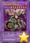 | 捕食植物 犀角龙 | [怪兽|效果|融合] 植物/暗 [★8] 2700/1900 融合怪兽＋暗属性怪兽 ①：1回合1次，以对方场上1只表侧表示怪兽为对象才能发动。给那只怪兽放置1个捕食指示物。有捕食指示物放置的2星以上的怪兽的等级变成1星。这个效果在对方回合也能发动。 ②：只要这张卡在怪兽区域存在，对方发动的有捕食指示物放置的怪兽的效果无效化。 |
 | 调弦之魔术师 | [怪兽|效果|调整|灵摆] 魔法师/暗 [★4] 0/0 8/8 ←8 【灵摆】 8→ ①：只要这张卡在灵摆区域存在，自己场上的怪兽的攻击力·守备力上升自己的额外卡组的表侧表示的「魔术师」灵摆怪兽种类×100。 【怪兽效果】 这张卡不能作从额外卡组的特殊召唤，把这张卡作为融合·同调·超量召唤的素材的场合，其他素材必须全部是「魔术师」灵摆怪兽。「调弦之魔术师」的怪兽效果1回合只能使用1次。 ①：这张卡从手卡的灵摆召唤成功时才能发动。从卡组把「调弦之魔术师」以外的1只「魔术师」灵摆怪兽守备表示特殊召唤。这个效果特殊召唤的怪兽的效果无效化，从场上离开的场合除外。 （注：效果暂未完全实现，目前此卡可以用任意素材进行融合·超量召唤） |
| 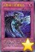 | 幻影骑士团 雾鸦爪 | [陷阱] ①：以除外的1只自己的「幻影骑士团」怪兽为对象才能发动。那只怪兽加入手卡。 ②：这张卡在墓地存在的场合，对方的直接攻击宣言时以自己墓地1只4星以下的「幻影骑士团」怪兽为对象才能发动。那只怪兽特殊召唤，这张卡变成持有和那只怪兽相同原本等级的通常怪兽（战士族·暗·攻/守0）在怪兽区域特殊召唤（不当作陷阱卡使用）。这个效果特殊召唤的这张卡从场上离开的场合除外。 |
| 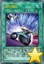 | 疾行漂移 | [魔法|速攻] ①：自己场上的怪兽只有调整1只的场合才能发动。从卡组把1只4星以下的「疾行机人」怪兽特殊召唤。在那只怪兽的特殊召唤成功时，双方不能让魔法·陷阱·怪兽的效果发动。 |
| 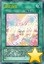 | 固定音型 | [魔法] ①：自己场上没有怪兽存在的场合才能发动。从自己的手卡·卡组把「幻奏」融合怪兽卡决定的2只融合素材怪兽送去墓地，把那1只融合怪兽从额外卡组融合召唤。这个回合的结束阶段，这个效果融合召唤的怪兽破坏，若那一组融合素材怪兽在自己墓地齐集，可以把那一组特殊召唤。 |
| 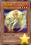 | 月光彩雏 | [怪兽|效果] 兽战士/暗 [★4] 1400/800 「月光彩雏」的②的效果1回合只能使用1次。 ①：1回合1次，从卡组·额外卡组把1只「月光」怪兽送去墓地才能发动。这个回合，把这张卡作为融合素材的场合，可以作为送去墓地的那只怪兽的同名卡来成为融合素材。 ②：这张卡被效果送去墓地的场合，以自己墓地1张「融合」为对象才能发动。那张卡加入手卡。 ③：这张卡被除外的场合才能发动。这个回合，对方在战斗阶段中不能把效果发动。 |
| 风魔女-玻璃铃 | [怪兽|效果|调整] 魔法师/风 [★4] 1500/1500 「风魔女-玻璃铃」的效果1回合只能使用1次。 ①：这张卡召唤·特殊召唤成功的场合才能发动。从卡组把「风魔女-玻璃铃」以外的1只「风魔女」怪兽加入手卡。这个效果的发动后，直到回合结束时自己不是风属性怪兽不能特殊召唤。 | |
| 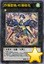 | 抒情歌鸲-吟诵椋鸟 | [怪兽|效果|超量] 鸟兽/风 [☆1] 0/0 1星怪兽×2只以上 ①：这张卡超量召唤成功的场合，以场上1只表侧表示怪兽为对象才能发动。那只怪兽的攻击力·守备力上升这张卡的超量素材数量×300。 ②：1回合1次，把这张卡1个超量素材取除才能发动。从卡组把1只鸟兽族·1星怪兽加入手卡。 ③：超量召唤的这张卡的战斗发生的对自己的战斗伤害让对方也承受。 |
| 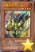 | 超重武者 大八-8 | [怪兽|效果] 机械/地 [★4] 1200/1800 「超重武者 大八-8」的③的效果1回合只能使用1次。 ①：这张卡召唤·特殊召唤成功时才能发动。这张卡的表示形式变更。 ②：这张卡可以用表侧守备表示的状态作出攻击。那个场合，这张卡用守备力当作攻击力使用进行伤害计算。 ③：自己墓地没有魔法·陷阱卡存在的场合才能发动。自己场上的表侧守备表示的这张卡变成攻击表示，从卡组把1只「超重武者装留」怪兽加入手卡。 |
| 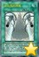 | 妖仙兽的神颪 | [魔法] ①：自己场上没有怪兽存在的场合，可以从以下效果选择1个发动。这张卡的发动后，直到回合结束时自己不是「妖仙兽」怪兽不能特殊召唤。 ●从卡组把1只5星以上的「妖仙兽」怪兽加入手卡。 ●从卡组选「妖仙兽 左镰神柱」「妖仙兽 右镰神柱」各1张在自己的灵摆区域放置。这个效果在灵摆区域放置的卡在下次的对方结束阶段破坏。 |
| 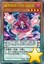 | 魔界剧团-闪烁小明星 | [怪兽|效果|灵摆] 恶魔/暗 [★4] 1000/1000 9/9 ←9 【灵摆】 9→ ①：自己不是「魔界剧团」怪兽不能灵摆召唤。这个效果不会被无效化。 ②：1回合1次，以自己场上1只「魔界剧团」怪兽为对象才能发动。这个回合，那只怪兽在同1次的战斗阶段中最多3次可以向怪兽攻击，作为对象的怪兽以外的自己怪兽不能攻击。 【怪兽效果】 ①：这张卡在自己回合不会被战斗破坏，同1次的战斗阶段中最多3次可以向怪兽攻击。 |
| 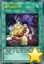 | 魔玩具补缀 | [魔法] 「魔玩具补缀」在1回合只能发动1张。 ①：从卡组把1张「融合」和1只「锋利小鬼」怪兽加入手卡。 |
| 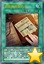 | 异形神的契约书 | [魔法|永续] ①：自己场上有以下种类的「DDD」怪兽从额外卡组特殊召唤时，各自效果1回合各能发动1次。 ●融合：自己回复1000基本分。 ●同调：特殊召唤的那些怪兽不会成为对方的效果的对象。 ●超量：选自己或者对方的场上·墓地1张卡除外。 ●灵摆：自己从卡组抽1张，那之后选1张手卡丢弃。 ②：自己准备阶段发动。自己受到2000伤害。 |
| 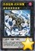 | 急袭猛禽-武库猎鹰 | [怪兽|效果|超量] 鸟兽/暗 [☆7] 2500/2000 7星怪兽×2 ①：1回合1次，把这张卡1个超量素材取除才能发动。从卡组把1只鸟兽族·4星怪兽特殊召唤。 ②：持有「急袭猛禽」怪兽作为超量素材中的这张卡在同1次的战斗阶段中可以作出最多有那个数量的攻击。 ③：持有「急袭猛禽」怪兽作为超量素材中的这张卡被送去墓地的场合才能发动。从额外卡组把「急袭猛禽-武库猎鹰」以外的1只「急袭猛禽」超量怪兽特殊召唤，把墓地的这张卡在那只超量怪兽下面重叠作为超量素材。 |
| 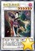 | 花札卫-月花见- | [怪兽|效果|调整|同调] 战士/暗 [★6] 2000/2000 ①：1回合1次，自己主要阶段才能发动。自己从卡组抽1张，给双方确认。那是「花札卫」怪兽的场合，可以把那只怪兽无视召唤条件特殊召唤。这个效果特殊召唤的怪兽在这个回合可以直接攻击。这个效果发动的场合，下次的自己回合的抽卡阶段跳过。 ②：把场上的这张卡作为同调素材的场合，可以把包含这张卡的全部同调素材怪兽当作2星怪兽使用。 |
| 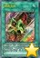 | 捕食生成 | [魔法|速攻] ①：把手卡的「捕食」卡任意数量给对方观看，以给人观看的数量的对方场上的表侧表示怪兽为对象才能发动。给那些怪兽各放置1个捕食指示物。有捕食指示物放置的2星以上的怪兽的等级变成1星。 ②：自己的「捕食植物」怪兽被战斗破坏的场合，可以作为代替把墓地的这张卡除外。 |
 | 迪亚邦德之核 | [怪兽|效果] 恶魔/暗 [★5] 1800/1200 「迪亚邦德之核」的②的效果1回合只能使用1次。 ①：这张卡的攻击宣言时发动。这张卡的攻击力上升500。 ②：以对方场上1只表侧表示怪兽为对象才能发动。那只怪兽的攻击力直到回合结束时下降这张卡的攻击力数值。那之后，这张卡直到下个回合的准备阶段除外。这个效果在对方回合也能发动。 （注：攻击力上升数值暂未确定） |
 | 毁灭咒文-死亡终极咒 | [魔法|速攻] ①：自己场上有8星以上的魔法师族怪兽存在的场合才能发动。选场上1张卡里侧表示除外。 ②：魔法与陷阱区域的这张卡被对方的效果破坏的场合才能发动。从卡组把1只「黑混沌之魔术师」或者「混沌之黑魔术师」无视召唤条件特殊召唤。 |
 | 鹰身女妖的羽毛吹雪 | [陷阱] 自己场上有「鹰身」怪兽存在的场合，这张卡的发动从手卡也能用。 ①：自己场上有鸟兽族·风属性怪兽存在的场合才能发动。直到回合结束时，对方发动的怪兽的效果无效化。 ②：魔法与陷阱区域的这张卡被对方的效果破坏的场合才能发动。从自己的卡组·墓地选1张「鹰身女妖的羽毛扫」加入手卡。 |
 | 元素英雄 真诚新宇侠 | [怪兽|效果] 战士/光 [★7] 2500/2000 「元素英雄 真诚新宇侠」的①②的效果1回合各能使用1次，对方回合也能发动。 ①：把这张卡从手卡丢弃，以场上1只「英雄」怪兽为对象才能发动。那只怪兽的攻击力直到回合结束时上升2500。 ②：从手卡丢弃1只「英雄」怪兽才能发动。这张卡的攻击力直到回合结束时上升丢弃的怪兽的攻击力数值。 |
 | 暗黑之召唤神 | [怪兽|效果] 恶魔/暗 [★5] 0/0 「暗黑之召唤神」的①的效果1回合只能使用1次。 ①：把这张卡解放才能发动。「神炎皇 乌利亚」「降雷皇 哈蒙」「幻魔皇 拉比艾尔」的其中1只从手卡·卡组无视召唤条件特殊召唤。这个回合，自己怪兽不能攻击。 ②：把墓地的这张卡除外才能发动。从卡组把「神炎皇 乌利亚」「降雷皇 哈蒙」「幻魔皇 拉比艾尔」的其中1只加入手卡。 （注：效果暂未确定，卡图暂时使用TF卡图） |
 | 失乐园 | [魔法|场地] 「失乐园」的②的效果1回合只能使用1次。 ①：只要这张卡在场地区域存在，自己的怪兽区域的「神炎皇 乌利亚」「降雷皇 哈蒙」「幻魔皇 拉比艾尔」「混沌幻魔 阿米泰尔」不会成为对方的效果的对象，不会被对方的效果破坏。 ②：自己的怪兽区域有「神炎皇 乌利亚」「降雷皇 哈蒙」「幻魔皇 拉比艾尔」「混沌幻魔 阿米泰尔」的其中任意种存在的场合才能发动。自己从卡组抽2张。 （注：效果暂未确定） |
 | 力量之壁 | [陷阱] ①：对方怪兽的攻击要让自己受到战斗伤害的伤害计算时才能发动。直到那次战斗发生的对自己的战斗伤害变成0为止把每500伤害1张卡从自己卡组上面送去墓地。 |
 | 疾行机人 多米诺蝴蝶 | [怪兽|效果|调整|灵摆] 机械/风 [★2] 100/300 8/8 ←8 【灵摆】 8→ 「疾行机人 多米诺蝴蝶」的②的灵摆效果1回合只能使用1次。 ①：自己不是风属性怪兽不能灵摆召唤。这个效果不会被无效化。 ②：从手卡丢弃1只风属性怪兽，以除外的1只自己的风属性怪兽为对象才能发动。那只怪兽加入手卡。 【怪兽效果】 把这张卡作为同调素材的场合，不是龙族·机械族的风属性怪兽的同调召唤不能使用。从额外卡组特殊召唤的这张卡被同调召唤使用的场合除外。 |
 | 雷电哥哥 | [怪兽|效果] 雷/光 [★4] 900/400 ①：这张卡召唤成功时才能发动。从卡组把「雷电哥哥」以外的1只雷族·光属性·4星怪兽加入手卡。 |
 | No.70 大罪蛛 | [怪兽|效果|超量] 昆虫/暗 [☆4] 2400/1200 4星怪兽×2 ①：1回合1次，把这张卡1个超量素材取除，以对方场上1只怪兽为对象才能发动。那只怪兽直到下次的对方准备阶段除外。 ②：这张卡攻击的伤害步骤结束时才能发动。这张卡的攻击力上升300，阶级上升3阶。 |
 | 天轮之双星道士 | [怪兽|效果|调整|同调] 天使/光 [★2] 100/800 调整＋调整以外的怪兽1只 「天轮之双星道士」的效果1回合只能使用1次。 ①：这张卡同调召唤成功时才能发动。从自己的手卡·墓地选最多4只调整以外的2星怪兽守备表示特殊召唤。这个效果特殊召唤的怪兽的效果无效化。这个效果的发动后，直到回合结束时自己不是同调怪兽不能从额外卡组特殊召唤。 |
 | 英雄的遗产 | [魔法] 「英雄的遗产」在1回合只能发动1张。 ①：让需以「英雄」怪兽为融合素材的2只融合怪兽从自己墓地回到额外卡组才能发动。自己从卡组抽3张。 |
 | 牛头鬼 | [怪兽|效果] 不死/地 [★4] 1700/800 「牛头鬼」的①②的效果1回合各能使用1次。 ①：自己主要阶段才能发动。从卡组把1只不死族怪兽送去墓地。 ②：这张卡被送去墓地的场合，从自己墓地把「牛头鬼」以外的1只不死族怪兽除外才能发动。从手卡把1只不死族怪兽特殊召唤。 |
 | 幻影英雄 仿生人 | [怪兽|效果] 战士/暗 [★4] 1000/1200 「幻影英雄 仿生人」的①的效果1回合只能使用1次。 ①：这张卡召唤·特殊召唤成功的场合才能发动。从卡组把1只「英雄」怪兽送去墓地。 ②：1回合1次，从自己墓地把1只「英雄」怪兽除外才能发动。从卡组把1张「融合」加入手卡。 |
 | 堕天使 乌科巴克 | [怪兽|效果] 天使/暗 [★3] 700/1000 「堕天使 乌科巴克」的效果1回合只能使用1次。 ①：这张卡召唤·特殊召唤成功的场合才能发动。从卡组把1张「堕天使」卡送去墓地。 |
 | 魔玩具重织 | [魔法] ①：以自己墓地1只「魔玩具」怪兽为对象才能发动。那只怪兽特殊召唤。 ②：把墓地的这张卡除外，以除外的1只自己的「毛绒动物」怪兽或者「魔玩具」怪兽为对象才能发动。那只怪兽回到墓地。这个效果在这张卡送去墓地的回合不能发动。 |
 | 死灵式同调 | [魔法] ①：从自己墓地选调整1只和调整以外的怪兽最多2只除外，把持有和除外的怪兽的等级合计相同等级的1只「星尘」同调怪兽从额外卡组当作同调召唤作特殊召唤。这个效果特殊召唤的怪兽的效果无效化。 |
 | 宙读之魔术士 | [怪兽|效果|灵摆] 魔法师/暗 [★7] 2500/2000 1/1 ←1 【灵摆】 1→ 「宙读之魔术士」的灵摆效果1回合只能使用1次。 ①：自己主要阶段才能发动。这张卡破坏，从手卡·卡组选1只「星读之魔术师」在自己的灵摆区域放置或特殊召唤。 【怪兽效果】 ①：自己场上的卡被战斗·效果破坏的场合才能发动。这张卡从手卡特殊召唤。那之后，可以选这个回合被破坏的1只怪兽，那1只同名怪兽从卡组加入手卡。 ②：把场上的这张卡除外，从自己的手卡·场上·墓地把「灵摆龙」「超量龙」「同调龙」「融合龙」怪兽各1只除外才能发动。把1只「霸王龙 扎克」当作融合召唤从额外卡组特殊召唤。 |
 | 刻读之魔术士 | [怪兽|效果|灵摆] 魔法师/暗 [★6] 2000/1700 8/8 ←8 【灵摆】 8→ 「刻读之魔术士」的灵摆效果1回合只能使用1次。 ①：自己主要阶段才能发动。这张卡破坏，从手卡·卡组选1只「时读之魔术师」在自己的灵摆区域放置或特殊召唤。 【怪兽效果】 ①：自己场上的卡被战斗·效果破坏的场合才能发动。这张卡从手卡特殊召唤。那之后，可以从手卡把1只怪兽特殊召唤。 ②：把场上的这张卡除外，从自己的手卡·场上·墓地把「灵摆龙」「超量龙」「同调龙」「融合龙」怪兽各1只除外才能发动。把1只「霸王龙 扎克」当作融合召唤从额外卡组特殊召唤。 |
 | 虹彩之魔术师 | [怪兽|效果|灵摆] 魔法师/暗 [★4] 1500/1000 8/8 ←8 【灵摆】 8→ ①：1回合1次，以自己场上1只魔法师族·暗属性怪兽为对象才能发动。这个回合那只怪兽用和对方怪兽的战斗给与对方的战斗伤害变成2倍。那之后，这张卡破坏。 【怪兽效果】 这张卡在规则上也当作「灵摆龙」卡使用。 ①：这张卡被战斗·效果破坏的场合才能发动。从卡组把1张「灵摆读阵」卡加入手卡。 |
 | 黑牙之魔术师 | [怪兽|效果|灵摆] 魔法师/暗 [★4] 1700/800 8/8 ←8 【灵摆】 8→ ①：1回合1次，以对方场上1只表侧表示怪兽为对象才能发动。那只怪兽的攻击力直到回合结束时变成一半。那之后，这张卡破坏。 【怪兽效果】 这张卡在规则上也当作「超量龙」卡使用。 ①：这张卡被战斗·效果破坏的场合，以自己墓地1只魔法师族·暗属性怪兽为对象才能发动。那只怪兽特殊召唤。 |
 | 白翼之魔术师 | [怪兽|效果|调整|灵摆] 魔法师/风 [★4] 1600/1400 1/1 ←1 【灵摆】 1→ ①：1回合1次，可以把以自己场上的魔法师族·暗属性怪兽为对象发动的效果无效。那之后，这张卡破坏。 【怪兽效果】 这张卡在规则上也当作「同调龙」卡使用。灵摆召唤的这张卡被同调召唤使用的场合除外。 |
 | 紫毒之魔术师 | [怪兽|效果|灵摆] 魔法师/暗 [★4] 1200/2100 1/1 ←1 【灵摆】 1→ ①：1回合1次，自己的魔法师族·暗属性怪兽进行战斗的伤害计算前才能发动。那只怪兽的攻击力直到伤害步骤结束时上升1200。那之后，这张卡破坏。 【怪兽效果】 这张卡在规则上也当作「融合龙」卡使用。 ①：这张卡被战斗·效果破坏的场合，以场上1张表侧表示的卡为对象才能发动。那张卡破坏。 |
 | 星霜之灵摆读阵 | [魔法|永续] 「星霜之灵摆读阵」的②的效果1回合只能使用1次。 ①：只要这张卡在魔法与陷阱区域存在，对方不能把自己场上的魔法师族怪兽作为魔法卡的效果的对象。 ②：表侧表示的「魔术师」灵摆怪兽卡从自己的怪兽区域·灵摆区域离开的场合发动。从卡组把1只「魔术师」灵摆怪兽加入手卡。 |
 | 星刻之魔术师 | [怪兽|效果|超量] 魔法师/暗 [☆4] 2400/1200 4星「魔术师」灵摆怪兽×2 这张卡用以上记的卡为超量素材的超量召唤才能从额外卡组特殊召唤。 ①：1回合1次，把这张卡1个超量素材取除才能发动。从自己的卡组·墓地的怪兽以及自己的额外卡组的表侧表示的灵摆怪兽之中选1只魔法师族·暗属性怪兽加入手卡。 ②：1回合1次，自己的怪兽区域·灵摆区域的灵摆怪兽卡被战斗·效果破坏的场合，可以作为代替从自己卡组把1只魔法师族怪兽送去墓地。 |
 | 时空之灵摆读阵 | [陷阱|永续] 「时空之灵摆读阵」的②的效果1回合只能使用1次。 ①：只要这张卡在魔法与陷阱区域存在，对方不能把自己场上的魔法师族怪兽作为陷阱卡的效果的对象。 ②：以自己的怪兽区域·灵摆区域1张「魔术师」灵摆怪兽卡和对方场上1张卡为对象才能发动。那些卡破坏。没被这个效果把2张卡破坏的场合，可以选场上1张卡送去墓地。 |
 | 捕食植物 蜂兰蝎 | [怪兽|效果] 植物/暗 [★3] 1200/800 「捕食植物 蜂兰蝎」的效果1回合只能使用1次。 ①：这张卡召唤·特殊召唤成功的场合，从手卡把1只怪兽送去墓地才能发动。从卡组把「捕食植物 蜂兰蝎」以外的1只「捕食植物」怪兽特殊召唤。 |
 | 捕食植物 蛇瓶草眼镜蛇 | [怪兽|效果] 植物/暗 [★3] 1000/1500 「捕食植物 蛇瓶草眼镜蛇」的效果在决斗中只能使用1次。 ①：这张卡用「捕食植物」怪兽的效果特殊召唤成功的场合才能发动。从卡组把1张「融合」魔法卡加入手卡。 |
 | 捕食植物 冬虫夏草 | [怪兽|效果] 植物/暗 [★1] 0/0 ①：自己准备阶段把墓地的这张卡除外，以自己墓地2只4星以下的「捕食植物」怪兽为对象才能发动。那些怪兽特殊召唤。这个效果的发动后，直到回合结束时自己不能通常召唤，不是融合怪兽不能特殊召唤。 |
 | 抒情歌鸲-钴尖晶雀 | [怪兽|效果] 鸟兽/风 [★1] 0/100 「抒情歌鸲-钴尖晶雀」的①的效果1回合只能使用1次。 ①：这张卡特殊召唤成功的场合才能发动。从卡组把1只鸟兽族·1星怪兽加入手卡。 ②：场上的这张卡为素材作超量召唤的风属性怪兽得到以下效果。 ●这张卡不会成为对方的效果的对象。 |
 | 抒情歌鸲-青玉燕 | [怪兽|效果] 鸟兽/风 [★1] 100/0 「抒情歌鸲-青玉燕」的①的效果1回合只能使用1次。 ①：自己场上有鸟兽族怪兽存在的场合才能发动。这张卡和1只鸟兽族·1星怪兽从手卡特殊召唤。 ②：场上的这张卡为素材作超量召唤的风属性怪兽得到以下效果。 ●这次超量召唤成功的场合，以自己墓地1只「抒情歌鸲」怪兽为对象才能发动。那只怪兽在这张卡下面重叠作为超量素材。 |
 | 抒情歌鸲-绿松石莺 | [怪兽|效果] 鸟兽/风 [★1] 100/100 「抒情歌鸲-绿松石莺」的②的效果1回合只能使用1次。 ①：自己场上没有怪兽存在的场合，这张卡可以从手卡特殊召唤。 ②：这张卡从手卡的特殊召唤成功的场合才能发动。从自己的手卡·墓地选1只「抒情歌鸲」怪兽特殊召唤。 |
 | 真龙机兵 十二炼机圣 | [怪兽|效果] 幻龙/光 [★9] 3000/3000 这张卡通常召唤的场合，必须把3只怪兽解放作召唤，可以作为怪兽的代替而把自己场上的永续魔法·永续陷阱卡解放。 ①：这张卡不受原本种类（怪兽·魔法·陷阱）和为这张卡的上级召唤而解放的卡相同的卡的效果影响。 ②：上级召唤的这张卡被对方破坏的场合才能发动。地·水·炎·风属性的其中1只融合·同调·超量怪兽从额外卡组特殊召唤。 |
 | 电子光虫-LED瓢虫 | [怪兽|效果] 昆虫/光 [★3] 500/0 把这张卡作为超量召唤的素材的场合，不是昆虫族怪兽的超量召唤不能使用。 ①：1回合1次，表侧攻击表示的这张卡变成守备表示时才能发动。从卡组把1只昆虫族·3星怪兽加入手卡。 ②：场上的这张卡为素材作超量召唤的怪兽得到以下效果。 ●这张卡战斗破坏怪兽时自己从卡组抽1张。 |
 | 抒情歌鸲-聚集夜莺 | [怪兽|效果|超量] 鸟兽/风 [☆1] 0/0 1星怪兽×2只以上 ①：这张卡的攻击力上升这张卡的超量素材数量×200。 ②：这张卡可以直接攻击，持有超量素材的这张卡在同1次的战斗阶段中可以作出最多有那个数量的攻击。 ③：1回合1次，把这张卡1个超量素材取除才能发动。直到回合结束时，自己场上的「抒情歌鸲」怪兽不会被战斗·效果破坏，自己受到的战斗伤害变成0。这个效果在对方回合也能发动。 |
 | 真龙皇 法·王·兽 | [怪兽|效果|超量] 幻龙/暗 [☆9] 3000/3000 9星怪兽×2只以上 ①：1回合1次，把这张卡1个超量素材取除，宣言1个属性才能发动。直到回合结束时，场上的表侧表示怪兽变成宣言的属性，宣言的属性的对方怪兽不能把效果发动，也不能攻击。这个效果在对方回合也能发动。 ②：只要这张卡在怪兽区域存在，自己手卡的「真龙」怪兽的效果破坏的怪兽从对方场上也能选。 |
 | 超越融合 | [魔法] 不能对应这张卡的发动让卡的效果发动。 ①：支付2000基本分才能发动。融合怪兽卡决定的2只融合素材怪兽从自己场上送去墓地，把那1只融合怪兽从额外卡组融合召唤。 ②：把墓地的这张卡除外，以这张卡的效果融合召唤的1只怪兽为对象才能发动。那只怪兽的融合召唤使用过的一组融合素材怪兽从自己墓地特殊召唤。这个效果特殊召唤的怪兽的攻击力·守备力变成0，效果无效化。 |
 | 破坏剑士的摇篮 | [陷阱] 「破坏剑士的摇篮」在1回合只能发动1张。 ①：从卡组把「破坏剑士的摇篮」以外的1张「破坏剑」卡和1只「巴斯达·布雷达」怪兽送去墓地才能发动。从自己的额外卡组·墓地选1只「破戒蛮龙-破坏龙」特殊召唤。这个效果特殊召唤的怪兽在下个回合的结束阶段破坏。 ②：把墓地的这张卡除外才能发动。这个回合，自己场上的「破坏剑」卡不会被战斗·效果破坏。 |
 | 神数的神意 | [魔法] 「神数的神意」在1回合只能发动1张。 ①：从卡组把「神数的神意」以外的1张「神数」卡加入手卡。 ②：自己场上的「神数」卡被破坏的场合，可以作为代替把墓地的这张卡除外。这个效果在这张卡送去墓地的回合不能使用。 |
 | 真龙战士 点火烈·炽热 | [怪兽|效果] 幻龙/炎 [★5] 2400/1000 这张卡表侧表示上级召唤的场合，可以作为怪兽的代替而把自己场上的永续魔法·永续陷阱卡解放。 ①：1回合1次，上级召唤的这张卡存在，对方把魔法·陷阱·怪兽的效果发动时才能发动。从卡组选1张「真龙」永续魔法卡加入手卡或在自己场上发动。 |
 | 真龙导士 威风凛·少女 | [怪兽|效果] 幻龙/风 [★5] 2300/1500 这张卡表侧表示上级召唤的场合，可以作为怪兽的代替而把自己场上的永续魔法·永续陷阱卡解放。 ①：1回合1次，上级召唤的这张卡存在，对方把魔法·陷阱·怪兽的效果发动时才能发动。从卡组把1只「真龙」怪兽加入手卡。 |
 | 真龙拳士 雾动轰·铁拳 | [怪兽|效果] 幻龙/水 [★6] 2500/1200 这张卡表侧表示上级召唤的场合，可以作为怪兽的代替而把自己场上的永续魔法·永续陷阱卡解放。 ①：1回合1次，上级召唤的这张卡存在，对方把魔法·陷阱·怪兽的效果发动时才能发动。从卡组选1张「真龙」永续陷阱卡加入手卡或在自己场上发动。 |
 | 龙神阵·略图 | [魔法|场地] ①：场上的「真龙」怪兽的攻击力·守备力上升300。 ②：只要这张卡在场地区域存在，上级召唤的「真龙」怪兽在1回合各有1次不会被战斗破坏。 ③：1回合1次，自己主要阶段才能发动。选这张卡以外的自己的手卡·场上1张卡破坏，从卡组把1张「真龙」卡加入手卡。 |
 | 真龙的继承 | [魔法|永续] 「真龙的继承」的①②③的效果1回合各能使用1次。 ①：自己主要阶段才能发动。自己从卡组抽出这个回合从场上送去墓地的「真龙」卡种类（怪兽·魔法·陷阱）的数量。 ②：自己主要阶段才能发动。把1只「真龙」怪兽表侧表示上级召唤。 ③：这张卡从魔法与陷阱区域送去墓地的场合，以场上1张魔法·陷阱卡为对象才能发动。那张卡破坏。 |
 | 真龙皇的复活 | [陷阱|永续] 「真龙皇的复活」的①②③的效果1回合各能使用1次，作为①②的效果在同一连锁上不能发动。 ①：以自己墓地1只「真龙」怪兽为对象才能发动。那只怪兽守备表示特殊召唤。这个效果的发动后，直到回合结束时自己不能把怪兽特殊召唤。 ②：对方主要阶段才能发动。把1只「真龙」怪兽表侧表示上级召唤。 ③：这张卡从魔法与陷阱区域送去墓地的场合，以场上1只怪兽为对象才能发动。那只怪兽破坏。 |
 | 真龙凰 玛丽亚姆内 | [怪兽|效果] 幻龙/风 [★9] 2700/2100 「真龙凰 玛丽亚姆内」的①②的效果1回合各能使用1次。 ①：自己主要阶段才能发动。从这张卡以外的手卡以及自己场上的表侧表示怪兽之中把包含风属性怪兽的2只怪兽破坏，这张卡从手卡特殊召唤，把2只风属性怪兽破坏的场合，可以从对方卡组上面把4张卡除外。 ②：这张卡被效果破坏的场合才能发动。从卡组把1只风属性以外的幻龙族怪兽加入手卡。 |
常见问题
Q.某张卡有BUG！
A.请到页面下方留言反馈，或联系233服QQ群里的尸体233（QQ：921439818）。
Q.卡片右下角的黄色星星是什么意思？
A.表示那张卡暂未有实卡，是先行卡。其卡片密码暂时使用临时密码（1开头的9位数）。
这种卡需要在23333端口才能使用。此外部分使用同样密码体系的服务器（不包括Checkmate）也可以使用。
实卡发售后，对应的带星星的先行卡会失效，请更新游戏，来获取正式的版本。
Q.卡片右下角的绿色加号是什么意思？
A.表示那张卡已有实卡但YGOPRO的国内官方版本暂未更新，是本补丁增加的卡片。其卡片密码是正式密码。
这种卡在233端口更新前只能在23333端口使用。但其他更新速度较快的服务器（包括Checkmate）一般也可使用。
一般这种卡不久就会正式更新到233服，请关注公告，更新后请下载YGOPRO的正式更新来获取那些卡。
Q.为什么安装了最新的先行卡补丁仍然没有某些卡？
A.本补丁只包含先行卡，不包含已经正式更新的卡。
请下载YGOPRO的正式更新来获取那些卡。
Q.为什么我更新先行卡补丁之后反而有卡消失了？
A.因为那些卡已经不再是先行卡了，本补丁不再包含它们。
请下载YGOPRO的正式更新来获取那些卡。
Q.安装后没有新卡？
A.本补丁附带新卡列表的卡组。
请确保你把文件解压到了游戏文件夹里，而不是新建了一个文件夹。
电脑版需要重启游戏才能重新载入数据库。
手机版需要自定义数据库，详见使用方法。
Q.安装后新卡没有卡图？
A.请确保你解压出来了压缩包里所有文件，不能只解压1个文件。
Q.手机版找不到sdcard文件夹？
A.部分手机可能位于storage或mnt文件夹里。
Q.手机版提示没有权限？
A.同上，换个文件夹试试。
Q.某张卡不能用，提示无效卡组？
A.本补丁的最新版只能与23333端口完美兼容。
请下载YGOPRO的正式更新，并更新先行卡补丁到最新版，把端口改为23333，才能正常使用先行卡。
Q.搜索卡片时发现有重复卡片？
A.因为本补丁是先行卡补丁，正式更新的卡片可能会与本补丁的卡片重复。删除或更新本补丁即可。
Q.电脑版怎么删除补丁？
A.删除expansions文件夹或其中pre-release.cdb即可。
Q.手机版怎么删除补丁？
A.点自定义卡片数据库下面的重置卡片数据库。
如果你打过其他的补丁，还需要再自定义一次数据库，选择cards.cdb。